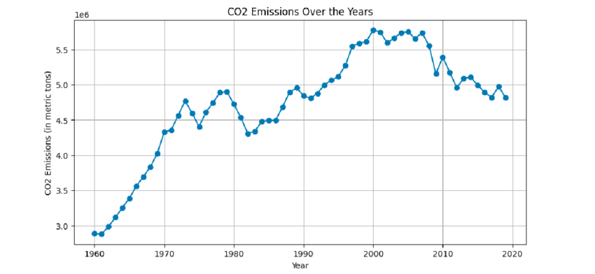

Eco-friendly buildings
Eco-friendly buildings
|

Graph showing the clear increase in CO2 emissions over the years. |
An eco-friendly lifestyle is important for various reasons, from reduced carbon footprint and energy consumption to even personal and social benefits such as improved health. In Holborn and St Pancras, 22% of climate emissions are from homes. 40% of homes are rated EPC D or below, meaning they are notably bad at insulating heat. That's 18,241 households with unnecessarily high energy bills, and according to government data, at least 9% of households are in feul poverty. Improved insulation will reduce energy bills and carbon emissions as well as improved social health leading to lower costs for NHS. Additionally, 100% of neighbourhoods in Holborn and St Pancras have air pollution above levels reccomended by the World Health Organization, and 5% of the population suffers from respiratory diseases which are made worse by air polution. As the demand for eco-friendliness increases, we speculate buildings of the Holborn area to undergo modifications to adapt to the necessary conditions of the environment. In order to acheive this, we speculate Holborn to take similar approaches to the impressive design "Earth-tect".
Eco-friendly home (Earth-tect)
| “Earth-tect” detached house is designed to achieve net zero CO2 emissions over its full 60-year lifecycle. It combines thermal insulation, solar power, storage batteries, and a renewable energy supply at no extra cost. It’s the first of its kind among major Japanese home builders to offer a fully decarbonised housing option from construction to demolition. In Japan, concerns over energy costs, natural disasters, and sustainability are causing demand for resilient and eco-friendly housing, and government policies are shifting towards stricter standards like net-zero homes. Consumers who value long-term savings, sustainability and durability (such as younger, environmentally conscious buyers and those in places where energy costs or climate extremes matter) are most likely affected. For the brand, it boosts leadership in decarbonisation and helps stand out in a changing market. The start of “earth-tect” shows a general direction towards lifecycle decarbonisation on housing as well as operational energy savings. Consumers want digital methods to track CO2 emissions and energy usage in real time. This is encouraging brands to explore eco-monitoring apps and carbon-accounting services. With increasing climate risks, homes may also taken on adaptive features for heatwaves, floods, or power outages. |  |